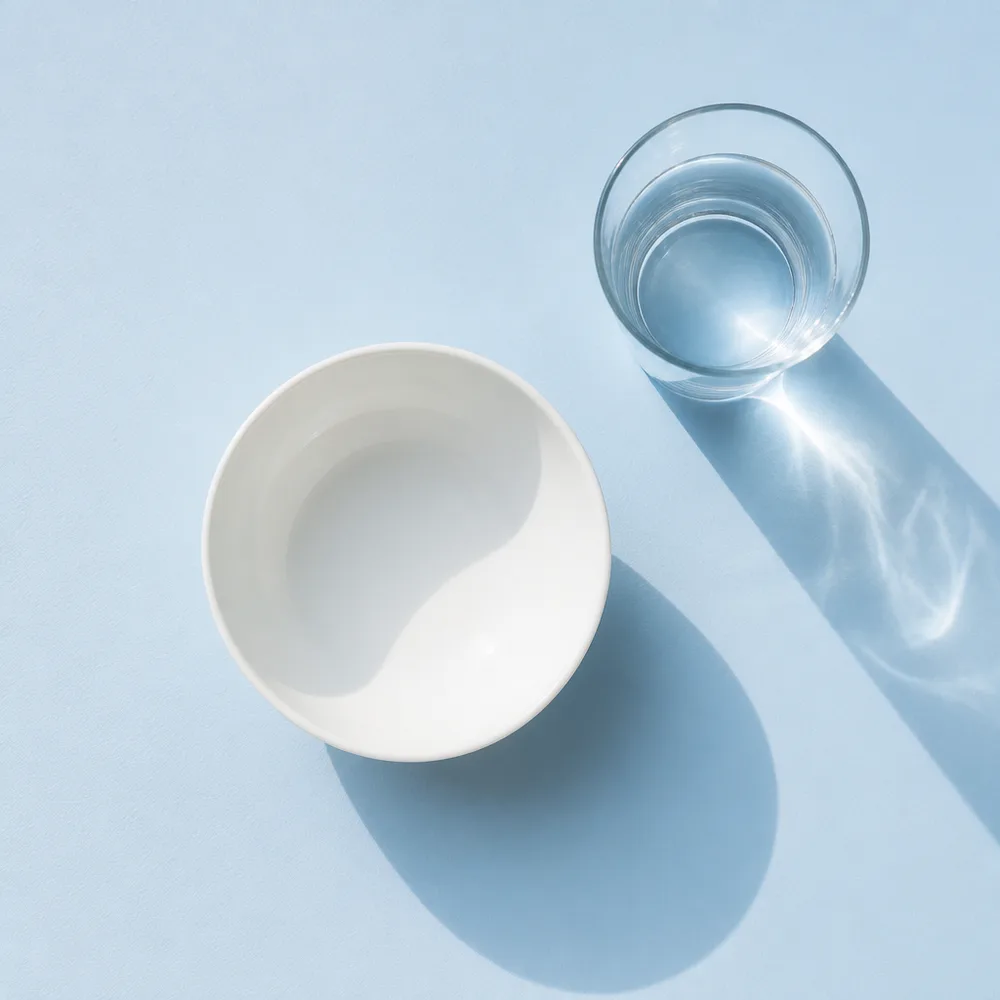
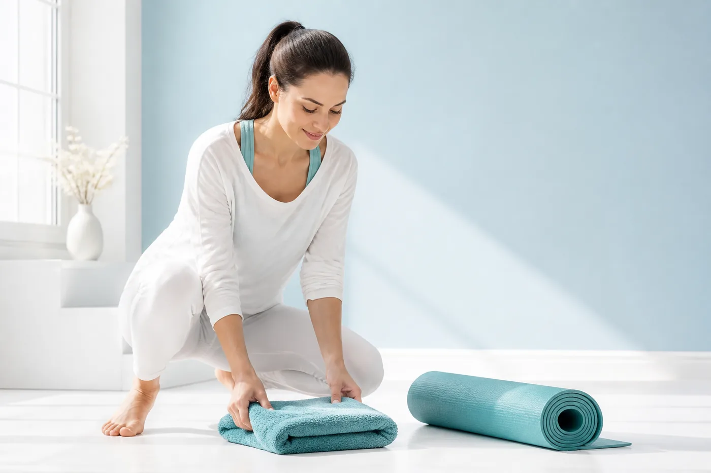

Appetite
How much you actually eat
Cravings, grazing, the second helping. The fastest of the three to respond, and the one most plans attack first and hardest.
The Snow Slim Quiz
6 questions about your week, your appetite and what you have already tried. At the end you get a plan built for what your answers point at: what to change, in what order, and what to stop wasting money on. Most of it costs nothing.
Your plan shows on the next screen.
Why diets stall
Three different things stall weight, and from the outside they look identical. The quiz works out which one is yours.
Three things started in the same month, all abandoned by week six, and no way of knowing which one was working.
A clean week, a step count you are proud of, and the scale sits exactly where it was.
You did the hard part and you still do not look the way you expected to. There is a reason for that.
What the quiz checks

Cravings, grazing, the second helping. The fastest of the three to respond, and the one most plans attack first and hardest.

It shows up as a plateau that will not break, however clean the week was. Eating less is not the lever here.

Tone, skin and how you actually look in the mirror. Nothing about your diet reaches it, and almost nobody plans for it.

What you get at the end
Which of the three is driving what you see, which one is supporting it, and which one you can ignore for now.
Spread across the twelve weeks, one at a time, so you can tell what each one did. Most are changes to things you already do.
The specific things in your lane that are not worth buying, and why. This part is usually worth more than the rest of it.
At the end, underneath the free plan, and ranked. Optional. The plan works without it.
6 questions, 60 seconds
It is free, there is no account, and you can start tomorrow morning without buying anything.
Your plan shows on the next screen.
This quiz is for educational and informational purposes only. It is not medical advice, it is not a diagnosis, and it does not replace an assessment by a clinician. Individual results vary with body composition, diet, activity and consistency. If you are pregnant, nursing, managing a medical condition, or taking medication, talk to your healthcare provider before changing your diet or adding a supplement.